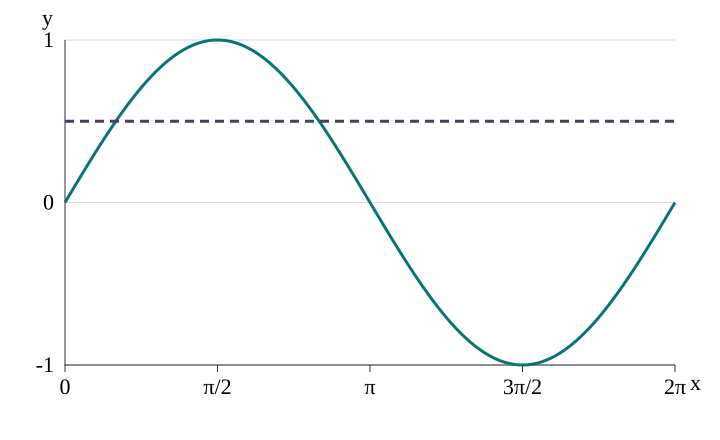
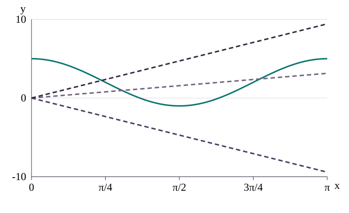
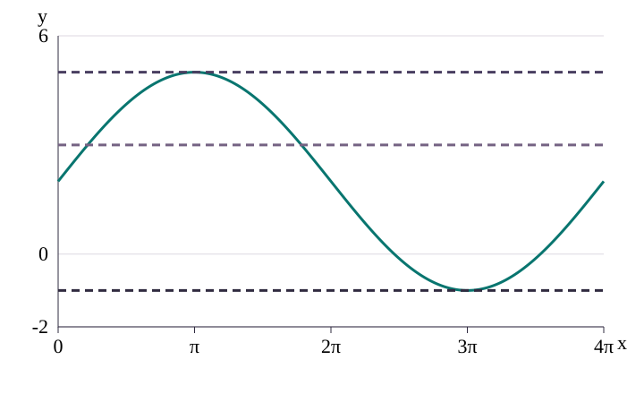
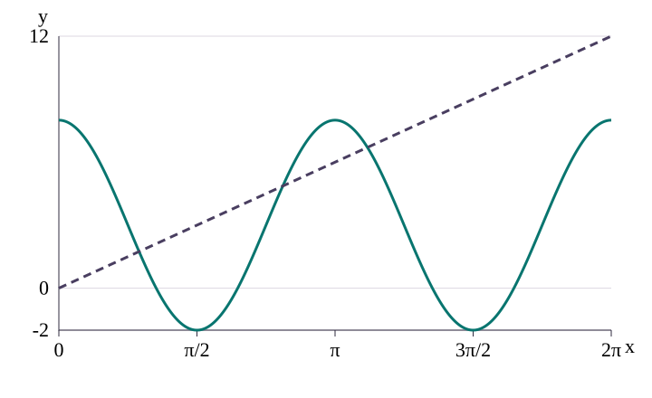
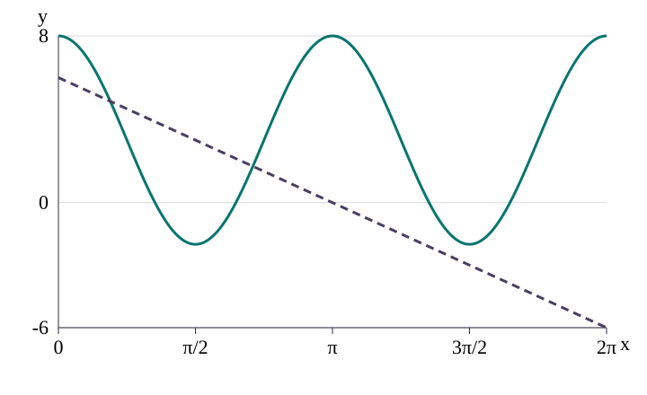
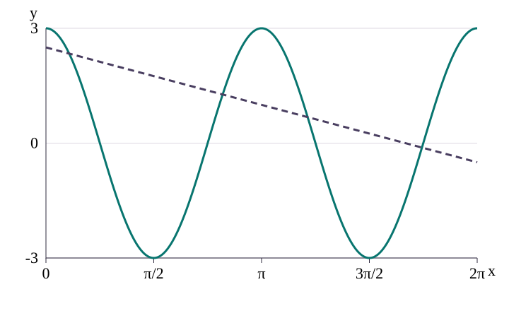
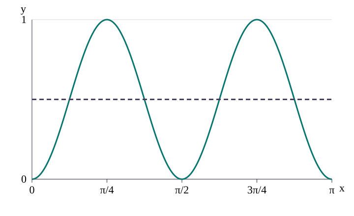

Draw both sides on one set of axes. Count intersections in the stated domain.
1. The picture behind every count
A solution is an x-value making both sides equal.
So f(x)=g(x) means the graphs y=f(x) and y=g(x) intersect.
A tangent touch at a maximum or minimum counts once.
For y=a sin(bx)+c or y=a cos(bx)+c: amplitude is |a|, midline is y=c, maximum c+|a|, minimum c−|a|, and period 2π/|b|.
Warm-up: sin x = 1/2, 0 ≤ x ≤ 2π
Sketch one sine cycle.
Draw y=1/2.
Crossings are x=π/6 and 5π/6.
2 solutions.

Solid: sin x. Dashed: y = 1/2
2. Curve equals line: four steps
Sketch the trig curve using amplitude, midline, period and key points.
Sketch the other graph on the same axes. A constant is horizontal; y=kx passes through the origin.
Count crossings in the domain, including endpoint crossings.
State the count.
Your turn
A horizontal line touches a curve at one peak without crossing it. How many solutions does that point give?
Worked example
Count solutions of 3 cos(2x) + 2 = 4 on 0 ≤ x ≤ π.
Subtract 2, then divide both sides by 3: cos(2x) = 2/3.
The input 2x runs from 0 to 2π, one cosine cycle. The level 2/3 is reached once while falling and once while rising.
2 solutions.
Three lines through the origin
Now count 3 cos(2x) + 2 = kx on 0 ≤ x ≤ π for k = −3, 1 and 3. The origin is the point (0,0). A line y = kx passes through it; k is its gradient, the change in y for each unit increase in x.

Solid: 3 cos(2x) + 2. Dashed: −3x; x; 3x
The cosine curve is 5 at both ends and −1 at x = π/2.
For k = −3, the line is nonpositive. Until x = 1/3 the curve is positive; beyond x = 1/3 the line is below −1, the curve minimum. It never meets the curve: 0 solutions.
For k = 1, the line is below the curve at 0, above it at π/2 and below it at π. The graph shows one crossing on each side of the trough: 2 solutions.
For k = 3, the increasing line crosses the falling curve once and stays above the remaining curve: 1 solution.
3. Horizontal levels
f(x)=2+3 sin(x/2), 0≤x≤4π
Amplitude 3, midline 2, so maximum 5 and minimum −1.
The period is 4π, so this domain contains one full cycle.
At k=6, the line is above the maximum: 0.
At k=5, it touches the maximum once: 1.
At k=3, it crosses twice: 2.
At k=−1, it touches the minimum once; at k=−2 it is below: 1 and 0.

Solid: 2 + 3 sin(x/2). Dashed: y = 5; y = 3; y = −1
Key ideas
Sketch both sides on one set of axes.
Use amplitude, midline, period, range and endpoints before counting.
A touch counts once; strict inequalities exclude equality points.
More worked examples
4. Sloping lines through two points
5 cos(2x)+3 = (6/π)x, 0≤x≤2π
The line joins (0,0) to (2π,12).
The cosine curve has two cycles, starts at 8 and ends at 8.
The rising line crosses the wave three times, so 3 solutions.

Solid: 5 cos(2x) + 3. Dashed: 6x/π
5 cos(2x)+3 = 6−(6/π)x, 0≤x≤2π

Solid: 5 cos(2x) + 3. Dashed: 6 − 6x/π
The line joins (0,6) to (2π,−6).
It begins below the curve and falls steadily.
It crosses the wave twice, so 2 solutions.
5. Rearranged line against cosine
6 cos(2x)=5−3x/π, 0≤x≤2π
Divide by 2: 3 cos(2x)=(5−3x/π)/2.
Compare y=3 cos(2x) with y=(5−3x/π)/2.
The deterministic sketch shows crossings near the start, near the middle rising branch, on the falling branch, and near the end.
4 solutions.

Solid: 3 cos(2x). Dashed: (5 − 3x/π)/2
6. Steep line and endpoint checks
2+3 sin(x/2)=5−2x, 0≤x≤4π
At x=0, curve=2 and line=5: line above.
At x=π, curve=5 and line≈−1.28: curve above, so one crossing lies before π.
After π the line keeps falling below −1, while the curve never falls below −1.
1 solution.
7. The sin² pattern
f(x)=p sin²(2x)+q, p>0, 0≤x≤π
Since 0≤sin²(2x)≤1, the range is q≤f≤p+q.
The top level p+q meets two peaks.
The bottom level q meets three troughs.
The middle level p/2+q meets four times.

The picture shows sin²(2x) before multiplying by p and adding q. The dashed level is 1/2.
Your turn
The curve is above a line at an included left endpoint. The question asks where curve > line. Include this endpoint?
8. Inequalities
2 cos x+3 sin x>0, 0°≤x≤360°
Rearrange to 2 cos x>−3 sin x.
The curves meet at 146.3° and 326.3°.
Check x=0: left=2, right=0, so left is above.
Strict inequality excludes the crossings. 0°≤x<146.3° or 326.3°<x≤360°.
9. Mixed counting examples
4+2 cos(3x)=3, 0≤x≤2π
2 cos(3x)=−1, so cos(3x)=−1/2.
3x covers 0 to 6π: three cycles.
Two crossings per cycle gives 6 solutions.
2 sin x+1=(2/π)x, 0≤x≤2π
At x=0, curve=1 and line=0.
At x=π/2, curve=3 and line=1; at x=π, curve=1 and line=2.
The sign changes once between π/2 and π, then stays positive. 1 solution.
3 cos x+1=2, 0≤x≤2π
3 cos x=1, so cos x=1/3.
A positive cosine level inside one cycle is met twice. 2 solutions.
4 sin x>3, 0°≤x≤360°
The given intersections are 48.6° and 131.4°.
The curve y = 4 sin x is above y = 3 between them.
48.6°<x<131.4°.
More worked examples
Compare three levels
For y = 4 cos(2x) + 3 on 0 ≤ x ≤ π, count solutions when y = k for k = −2, 3 and 8.
Cosine ranges from −1 to 1. Multiply by 4 and add 3: the range is −1 to 7.
There is one full cosine cycle because the period is 2π/2 = π.
−2 is below the minimum: 0 solutions.
3 is the midline. The curve crosses it while falling and rising: 2 solutions.
8 is above the maximum: 0 solutions.
A strict inequality
The graphs y = 3 sin x + 1 and y = (2/π)x meet once at x ≈ 2.864 on 0 ≤ x ≤ 2π. Find where 3 sin x + 1 > (2/π)x.
At x = 0, the curve is 1 and the line is 0. The curve starts above.
They cross only once, so the curve stays above before that crossing and below afterwards.
The left endpoint satisfies the strict inequality and is included. Equality at the crossing is excluded.